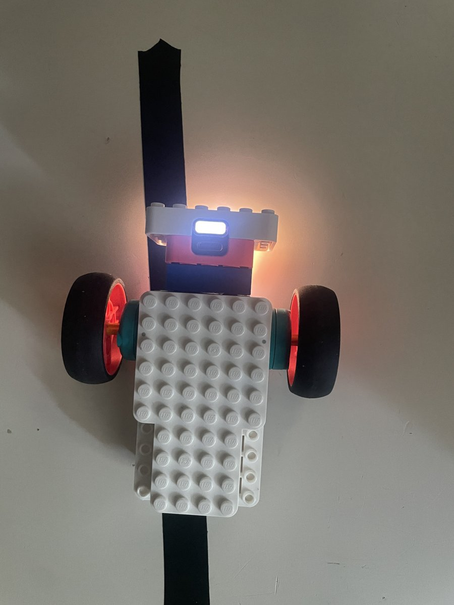

This page is a playground for seeing many different ways of controlling a robot. The robot is a simple line follower: a Double Motor drives, and a color sensor pointing at the floor reads the reflection as it sits over the edge of a line. Each tab (Bang bang, PD, LQR, MPC, Q-table, Imitation learning) steers the same car with a different method, and each shows the equations, the code, and a live plot of what the controller sees and does, so you can compare how they behave.
Connect the Double Motor and the Color Sensor above, then go to the Calibrate tab and measure the sensor on and off the line. Every controller depends on those two readings. Recalibrate whenever the lighting or the surface changes.
One sensor over the edge only tells the car how far it is from the target, not which way the line went; if it drives completely off the line, it can’t tell which side to turn toward. All the control runs in the browser, so Bluetooth delays of a few tens of milliseconds (and some jitter) sit between each reading and the car’s reaction, which limits how fast and how smoothly it can drive. The LQR and MPC models are deliberately crude, and the sensor’s reading is not perfectly linear across the edge. The Q-table and the neural net learn from only a few minutes of driving, so expect them to be rougher than the hand-designed controllers. Treat the comparison as a demonstration of the ideas, not a race between tuned controllers.
Connect the color sensor, hold it over the line and press Measure on line, then hold it over the floor and press Measure off line. Each takes the average over one second.
How often each device is asked to send a new reading. Set it before measuring the steering authority below, because the delay between what the car senses and how it reacts changes the result. The rate that really arrives over Bluetooth is shown in each device’s header.
The LQR and MPC tabs use a simple model of the car, and its key number is the steering authority b: how strongly steering changes the error (bigger means the car swings into or out of the line faster; it grows with speed). This test steers with Kp only, so the car wobbles back and forth across the edge, and the wobble’s period gives b. Calibrate first, use the base speed you plan to drive at, and let it wobble for several cycles. You want the lowest Kp that gives a steady wobble, not the biggest one: try two or three values, and if the estimates agree trust them, but if b keeps falling as Kp rises, Bluetooth delay is biasing it.
This drives the car in a circle on the spot at full differential speed. The turn rate it reaches is the most the steering can ever do: a controller can’t correct a heading error any faster. The hub’s gyro measures it for you. Put the car on the floor with room to spin, and try both directions.
| Direction | Turn rate (gyro average) |
|---|---|
| Left ↺ | – |
| Right ↻ | – |
Two-state control: if the sensor reads on-line, turn one way at full strength; if it reads off-line, turn the other. The target is halfway between the two calibrated readings (set them on the Calibrate tab).
\(r\) measured reflection, \(r_{\text{on}}, r_{\text{off}}\) the calibrated readings, \(e\) error (+1 on the line, −1 off it), \(B\) base speed, \(T\) turn. Speeds are limited to ±100; following the left edge flips the sign of \(u\).
Proportional-derivative control: steer in proportion to how far the reading is from the target (P), and against how fast that error is changing (D). Unlike bang-bang, the steering fades smoothly to zero on the target.
\(r\) measured reflection, \(r_{\text{on}}, r_{\text{off}}\) the calibrated readings, \(e\) error (+1 on the line, −1 off it), \(B\) base speed, \(K_p\) and \(K_d\) the gains. Speeds are limited to ±100; following the left edge flips the sign of \(u\).
Linear-quadratic regulator: you say how much you care about error, swinging and steering effort, and the math finds the best steering feedback for a simple model of the car. It has the same shape as PD, but the gains come from the weights.
\(e\) error (+1 on the line, −1 off it), \(u\) steering as a fraction of full, \(b\) the model’s steering authority (1000 until you measure it on the Calibrate tab), \(Q_e, Q_d, R\) your weights, \(B_s\) base speed. \(\dot e\) is estimated by smoothed differencing of the sensor. Speeds are limited to ±100; following the left edge flips the sign of \(u\).
Model predictive control: at every reading it uses a simple model of the car to plan the best steering for the next half second or so, subject to a steering limit, applies only the first move, and then plans again.
\(r\) measured reflection, \(r_{\text{on}}, r_{\text{off}}\) the calibrated readings, \(e\) error (+1 on the line, −1 off it), \(B\) base speed. \(u\) steering as a fraction of full, \(b\) the model’s steering authority (1000 until you measure it on the Calibrate tab), \(\Delta t = 0.05\) s, \(N\) the horizon, \(u_{\max}\) the steering limit. The vector \(u\) holds the \(N\) planned moves; \(g_k\) and \(h_k\) say how much each move changes the error and rate \(k\) steps ahead; \(H\) (fixed) and \(f\) (from the latest measured \(e\) (that is, \(e_0\)) and the estimated \(\dot e\)) are what the solver works with. The plan is found by sweeping the moves one at a time and clipping each to the limit. Speeds are limited to ±100; following the left edge flips the sign of \(u\).
Q-learning: no model and no formula. The car sorts what it senses into a few situations (a row of the table) and keeps a score for each steering choice in each situation. It tries moves, sees whether the error got smaller, and updates the scores. Let it run a few minutes on a loop of track and watch the table fill in. The table is kept until you press Reset. If the car loses the line, press Stop (or wait for the run to end), put it back and press Run again rather than carrying it while it runs (see “How it works” below).
\(r\) measured reflection, \(r_{\text{on}}, r_{\text{off}}\) the calibrated readings, \(e\) error (+1 on the line, −1 off it), \(B\) base speed. \(T\) the Turn setting, \(\alpha,\gamma,\epsilon\) learning rate, discount and exploration. It chooses a move every 0.1 s. Speeds are limited to ±100; following the left edge flips the sign of \(u\).
Imitation learning: a small neural net steers from the error and its rate, and learns by copying a teacher: press Record and let a PD teacher drive (the plot shows it), press Train so the net copies the teacher’s steering, then press Start and the net drives. More and more varied examples (wobbles, curves) make a better copy.
\(r\) measured reflection, \(r_{\text{on}}, r_{\text{off}}\) the calibrated readings, \(e\) error (+1 on the line, −1 off it), \(B\) base speed. \(h\) the hidden units, \(W_1, b_1, w_2, b_2\) the weights, \(u^{*}\) the teacher’s steering for the same inputs, \(\eta\) the learning rate. Training nudges every weight a little after each example. Speeds are limited to ±100; following the left edge flips the sign of \(u\).